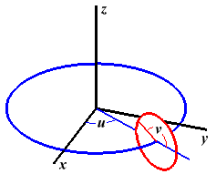

Members
arcBall :Boolean
When rotating using an arcball or Euler angles.
Type:
- Boolean
- Source:
axis :Object.<{String: Number}>
Enum for identifying rotation axes.
Type:
- Object.<{String: Number}>
- Source:
cubeMap :WebGLTexture
Cube map texture.
Type:
- WebGLTexture
- Source:
- See:
gl :WebGL2RenderingContext
The webgl context.
Type:
- WebGL2RenderingContext
- Source:
mat3 :glMatrix.mat3
3x3 Matrix
Type:
- glMatrix.mat3
- Source:
- See:
mat4 :glMatrix.mat4
4x4 Matrix
Type:
- glMatrix.mat4
- Source:
- See:
model :createModel.model
Model to be rendered.
Type:
- createModel.model
- Source:
modelViewMatrix :mat4
Change coordinate system, so the camera is at the origin.
Type:
- Source:
normalMatrix :mat3
Transform normals by the current modelView.
Type:
- Source:
program :WebGLProgram
Current shader.
Type:
- WebGLProgram
- Source:
rotAxis :Number
Current rotation axis.
Type:
- Number
- Source:
rotating :Boolean
Marks the change of a rotation type, to get a smooth transition: arcball ↔ Euler angles.
Type:
- Boolean
- Source:
rotator :SimpleRotator
Object to enable rotation by mouse dragging (arcball).
Type:
- Source:
teapotModel :modelData
An IFS of the famous teapot, about 20 units big.
Type:
- Source:
theta :Array.<Number>
Current rotation angles about the three coordinate axes.
Type:
- Array.<Number>
- Source:
yNorth :Boolean
Sets the North to be the y axis,
so the z axis points outside the screen.
Type:
- Boolean
- Source:
Methods
animation() → {loop}
A closure to render the animation and set requestId.
- Source:
Returns:
- Type
- loop
configureTexture(targets, images)
Creates cube map textures and generates a mipmap.
Parameters:
| Name | Type | Description |
|---|---|---|
targets |
Array.<GLenum> | binding points (targets) of the active texture. |
images |
Array.<HTMLImageElement> | images for the six faces of the cube map. |
- Source:
- See:
createModel(modelData) → {model}
Create a model with three buffers and a render function.
Parameters:
| Name | Type | Description |
|---|---|---|
modelData |
modelData | raw model data. |
Properties:
| Name | Type | Description | ||||||||||||||||||
|---|---|---|---|---|---|---|---|---|---|---|---|---|---|---|---|---|---|---|---|---|
model |
Object |
Properties
|
- Source:
Returns:
created model.
- Type
- model
cube(side) → {modelData}
Create a model of a cube, centered at the origin.
This is not a particularly good format for a cube, since an IFS representation has a lot of redundancy.Parameters:
| Name | Type | Description |
|---|---|---|
side |
Number | the length of a side of the cube. If not given, the value will be 1. |
- Source:
Returns:
- Type
- modelData
deg2rad(deg) → {Number}
Convert an angle in degrees to radians.
Parameters:
| Name | Type | Description |
|---|---|---|
deg |
Number | angle in degrees. |
- Source:
Returns:
angle in radians.
- Type
- Number
draw()
Render the scene.
- Source:
getModelData(geom) → {modelData}
Given an instance of
- THREE.BufferGeometry
Polyhedra have no index.
Parameters:
| Name | Type | Description |
|---|---|---|
geom |
external:THREE.BufferGeometry | THREE.BoxGeometry THREE.CapsuleGeometry, THREE.ConeGeometry, THREE.CylinderGeometry, THREE.PlaneGeometry, THREE.RingGeometry, THREE.SphereGeometry, THREE.TorusGeometry, THREE.TorusKnotGeometry, THREE.DodecahedronGeometry, THREE.IcosahedronGeometry, THREE.OctahedronGeometry, THREE.TetrahedronGeometry, THREE.TeapotGeometry. |
- Source:
Returns:
- Type
- modelData
init(cubeMapArr)
Entry point when page and cubemap array are loaded.
Parameters:
| Name | Type | Description |
|---|---|---|
cubeMapArr |
Array.<HTMLImageElement> | image array. |
- Source:
- See:
loadTexture(imageDir)
Loads the texture image array asynchronously and calls init only when the last image is loaded.
We do not know the order or when the six images finish loading.Parameters:
| Name | Type | Default | Description |
|---|---|---|---|
imageDir |
String | skybox | directory holding the six images. |
- Source:
- See:
rad2deg(rad) → {Number}
Convert an angle in radians to degrees.
Parameters:
| Name | Type | Description |
|---|---|---|
rad |
Number | angle in radians. |
- Source:
Returns:
angle in degrees.
- Type
- Number
ring(innerRadius, outerRadius, slices) → {modelData}
Creates a model of an annulus or disk lying in the xy plane, centered at the origin.
This is not a great representation, since all the normals are the same.Parameters:
| Name | Type | Description |
|---|---|---|
innerRadius |
Number | the radius of the hole in the radius; a value of
zero will give a disk rather than a ring. If not present, the default value is 0.25. |
outerRadius |
Number | the radius of the ring, from the center to the
outer edge. Must be greater than innerRadius. If not provided, the default value is 2*innerRadius or is 0.5 if innerRadius is 0. |
slices |
Number | the number of radial subdivisions in the circular approximation
of an annulus. If not provided, the value will be 32. |
- Source:
Returns:
- Type
- modelData
rotationMatrixToEulerAngles(R) → {Array.<Number>}
Returns the equivalent Euler angles of a given rotation matrix.
Parameters:
| Name | Type | Description |
|---|---|---|
R |
Float32Array | rotation matrix. |
- Source:
Returns:
Euler angles.
- Type
- Array.<Number>
setNorth(vertices, normals)
Rotate the given model so the y axis points North.
Parameters:
| Name | Type | Description |
|---|---|---|
vertices |
Float32Array | vertex array. |
normals |
Float32Array | normal array. |
- Source:
uvCone(radius, height, slices, noBottom) → {modelData}
Defines a model of a cone.
The axis of the cone is the z-axis, and the center is at (0,0,0).Parameters:
| Name | Type | Description |
|---|---|---|
radius |
Number | the radius of the cone |
height |
Number | the height of the cone. The cone extends from -height/2 to height/2 along the z-axis, with the tip at (0,0,height/2). |
slices |
Number | the number of slices, like the slices of an orange. |
noBottom |
Boolean | if missing or false, the cone has a bottom; if set to true, the cone has a bottom. The bottom is a disk at the wide end of the cone. |
- Source:
- See:
Returns:
- Type
- modelData
uvCylinder(radius, height, slices, noTop, noBottom) → {modelData}
Defines a model of a cylinder.
The axis of the cylinder is the z-axis, and the center is at (0,0,0).Parameters:
| Name | Type | Description |
|---|---|---|
radius |
Number | the radius of the cylinder |
height |
Number | the height of the cylinder. The cylinder extends from -height/2 to height/2 along the z-axis. |
slices |
Number | the number of slices, like the slices of an orange. |
noTop |
Boolean | if missing or false, the cylinder has a top; if set to true,
the cylinder has a top. The top is a disk at the positive end of the cylinder. |
noBottom |
Boolean | if missing or false, the cylinder has a bottom; if set to true,
the cylinder has a bottom. The bottom is a disk at the negative end of the cylinder. |
- Source:
- See:
Returns:
- Type
- modelData
uvSphere(radius, slices, stacks) → {modelData}
Create a model of a sphere.
The z-axis is the axis of the sphere, with the north pole on the positive z-axis and the center at (0,0,0).Parameters:
| Name | Type | Description |
|---|---|---|
radius |
Number | the radius of the sphere, default 0.5 if not specified. |
slices |
Number | the number of lines of longitude, default 32 |
stacks |
Number | the number of lines of latitude plus 1, default 16. (This is the number of vertical slices, bounded by lines of latitude, the north pole and the south pole.) |
- Source:
- See:
Returns:
- Type
- modelData
uvTorus(outerRadius, innerRadius, slices, stacks) → {modelData}
Create a model of a torus (surface of a doughnut).
The z-axis goes through the doughnut hole, and the center of the torus is at (0,0,0).Parameters:
| Name | Type | Description |
|---|---|---|
outerRadius |
Number | the distance from the center to the outside of the tube, 0.5 if not specified. |
innerRadius |
Number | the distance from the center to the inside of the tube, outerRadius/3 if not
specified. (This is the radius of the doughnut hole.) |
slices |
Number | the number of lines of longitude, default 32. These are slices parallel to the z-axis and go around the tube the short way (through the hole). |
stacks |
Number | the number of lines of latitude plus 1, default 16. These lines are perpendicular to the z-axis and go around the tube the long way (around the hole). |
- Source:
- See:
-
- torus
- 
Returns:
- Type
- modelData
Type Definitions
handleWindowResize()
Fires when the document view (window) has been resized.
Also resizes the canvas and viewport.- Source:
- See:
loop()
Animation loop.
- Source:
modelData
An object containing raw data for
vertices, normal vectors, texture coordinates, and indices.
Polyhedra have no index.
Type:
- Object
Properties:
| Name | Type | Description |
|---|---|---|
vertexPositions |
Float32Array | vertex coordinates. |
vertexNormals |
Float32Array | vertex normals. |
vertexTextureCoords |
Float32Array | texture coordinates. |
indices |
Uint16Array | Uint32Array | index array. |
- Source:
Events
click
Rotate aboux the x axis.
- Source:
click
Rotate aboux the y axis.
- Source:
click
Rotate aboux the z axis.
- Source:
click
Toggle arcBall rotation.
- Source:
click
Increment the model.
- Source:
load
Loads the texture image array when the page is loaded.
Type:
- function
Parameters:
| Name | Type | Description |
|---|---|---|
event |
Event | load event. |
- Source:
resize - executed when the window is resized.
Appends an event listener for events whose type attribute value is resize.
The callback argument sets the callback that will be invoked when the event is dispatched.
Parameters:
| Name | Type | Description |
|---|---|---|
event |
Event | the document view is resized. |
function |
callback | function to run when the event occurs. |
useCapture |
Boolean | handler is executed in the bubbling or capturing phase. |
- Source: